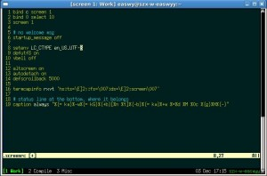

在Windows上使用putty+screen时，screen会把当前窗口的名称显示在putty的标题栏上，这样当前处于哪个窗口就一目了然了。
但在Easwy的Linux系统中，使用urxvt+screen时，发现当前窗口的名称不会显示在标题栏里。在网上搜索了很久才找到答案。
要想允许Screen改变rxvt/rxvt-unicode(即urxvt)的标题栏，需要在.screenrc中加入一句termcapinfo信息：
termcapinfo rxvt 'hs:ts=\E]2;:fs=\007:ds=\E]2;screen\007'
如果你用的是xterm，也需要在.screenrc中加入一句类似的话，具体内容见参考文档一。
可是，在标题栏里只显示当前的窗口名字，不能把把窗口的列表显示出来，在使用时还不是很方便。幸好我们可以设置Screen的状态栏，使之显示我们想要的内容。
在Easwy的.screenrc中加入了下面的内容：
caption always "%{= kw}%-w%{= kG}%{+b}[%n %t]%{-b}%{= kw}%+w %=%d %M %0c %{g}%H%{-}"
上面这段话会在Screen窗口的最下面一行显示出所有窗口的列表，以及主机名等信息。它的效果图如下：

现在的Screen用起来就方便多了。
更多内容，请阅读Easwy的博客上的其它文章。
[ 参考文档 ]
原创文章，请阅读页脚的许可方式，转载请注明：转载自易水博客 [ http://easwy.com/blog/ ]
本文链接地址: http://easwy.com/blog/archives/display-window-list-on-title-bar-and-status-bar-of-screen/
文章的脚注信息由WordPress的wp-posturl插件自动生成
ubuntu team对screen功能做了些包装叫byobu。
https://launchpad.net/byobu
平时使用起来很方便，可惜我CentOS编译有些问题，直接用了byobu-export版本，也够用:
1.可定制的状态显示，
2.已经打开的window列表，这样有时一个screen session开多个window就够用了。
term linux
caption always “%{+b yk}%H %{wk}|%c %{bk}%d.%m.%Y %{wk}| %{rk}%72=Load: %l%{wk}”
hardstatus alwayslastline “%?%{yk}%-Lw%?%{wb}%n*%f %t%?(%u)%?%?%{yk}%+Lw%?”
multiuser on
俺的